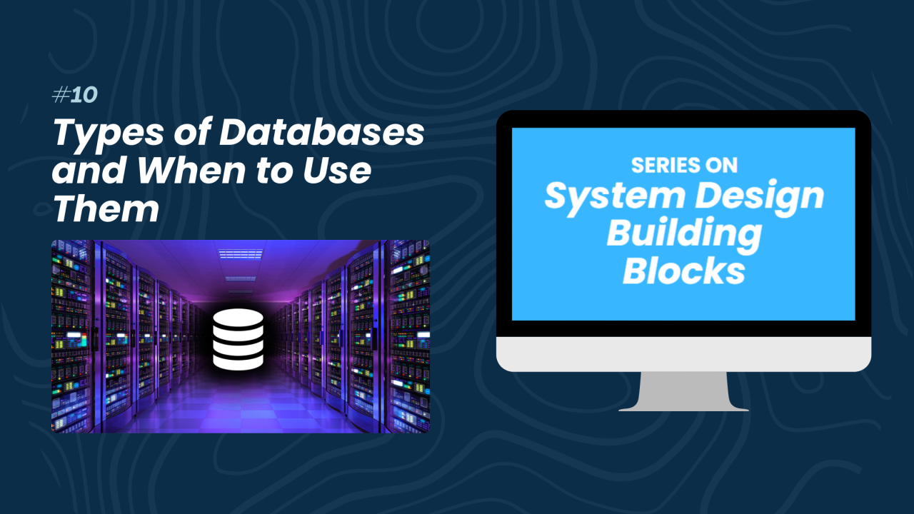

Types of Databases and When to Use Them
Ashmita Pandey · · Databases

Hi everyone, I'm Ashmita 👋
Databases are one of the foundational components of any system design. Whether you're building a small web app or designing a complex distributed system, choosing the right type of database plays a key role in performance, scalability, and maintainability.
In this article, we will explore 15 types of databases that are widely used in industry. We’ll break down how each works, when to use them, and look at real-world use cases and examples.
1. Relational Databases (RDBMS)
Relational databases structure data in tables consisting of rows and columns. Each table represents a specific entity, and rows correspond to individual records while columns define the attributes. Relationships between tables are established using keys (primary and foreign keys).
They provide strong consistency and support for complex queries and transactions using SQL. ACID properties (Atomicity, Consistency, Isolation, Durability) ensure reliable processing.
When to Use:
- Enterprise resource planning (ERP) systems
- Customer Relationship Management (CRM) tools
- E-commerce platforms handling user orders, inventory, and transactions
Examples: MySQL, PostgreSQL, Oracle Database
2. Key-Value Stores
Key-Value stores are simple databases where data is stored as a collection of key-value pairs. Each key must be unique and directly maps to a single data value. They are highly performant and scale horizontally.
They offer minimal querying capabilities but are ideal for storing simple, unstructured data.
When to Use:
- Session management
- User profile storage
- Real-time analytics or counters
Examples: Redis, DynamoDB
3. Document Databases
Document databases store data as documents (usually JSON, BSON, or XML). Each document is a self-contained unit that can include nested structures, making them suitable for semi-structured data.
They allow flexible schemas and dynamic data models which evolve over time.
When to Use:
- Online retail product catalogs
- Content management systems
- Applications with frequently changing data structures
Examples: MongoDB, Couchbase
4. Graph Databases
Graph databases store data in the form of nodes (entities), edges (relationships), and properties. They are optimized for traversing relationships and enable real-time querying across complex networks.
When to Use:
- Social networking platforms
- Fraud detection systems
- Recommendation engines
Examples: Neo4j, Amazon Neptune
5. Wide-Column Stores
Wide-column stores manage data in tables, rows, and columns but allow each row to have different columns. This makes them efficient for sparse datasets and high write throughput scenarios.
They are designed for horizontal scaling and are schema-flexible.
When to Use:
- IoT data ingestion
- Real-time analytics dashboards
- Logging systems
Examples: Apache Cassandra, Google Bigtable
6. In-Memory Databases
In-memory databases store data in RAM instead of disk, delivering ultra-fast read and write performance. They are volatile and often used as a caching layer.
When to Use:
- High-speed financial transactions
- Real-time gaming state
- Caching for web apps
Examples: Redis, Memcached
7. Time-Series Databases (TSDBs)
Time-series databases are optimized for time-stamped data points, typically collected at regular intervals. They offer efficient data ingestion, aggregation, and downsampling.
When to Use:
- Performance monitoring
- Sensor or telemetry data
- Trading systems tracking stock prices
Examples: InfluxDB, TimescaleDB, Prometheus
8. Object-Oriented Databases
These databases store data as objects, consistent with object-oriented programming languages. Data and methods are encapsulated together, preserving object relationships.
When to Use:
- Simulation-based applications
- Multimedia management
- Systems needing direct object persistence
Examples: ObjectDB, db4o
9. Text Search Databases
Text search databases are built for indexing and querying large volumes of unstructured text. They offer features like full-text search, ranking, tokenization, and stemming.
When to Use:
- Web search engines
- E-commerce product search
- Log aggregation and filtering
Examples: Elasticsearch, Apache Solr
10. Spatial Databases
Spatial databases manage geospatial data like coordinates, shapes, and locations. They provide spatial indexing, distance queries, and geometry functions.
When to Use:
- Navigation and mapping apps
- Urban planning GIS tools
- Fleet tracking systems
Examples: PostGIS, Oracle Spatial
11. Blob Datastores
Blob (Binary Large Object) datastores are optimized for storing unstructured binary data. They are used for storing media files and large documents.
When to Use:
- Cloud storage systems
- Video streaming platforms
- Backup and archival solutions
Examples: Amazon S3, Azure Blob Storage
12. Ledger Databases
Ledger databases are tamper-evident and provide immutable transaction logs. They are often used where auditability and transparency are crucial.
When to Use:
- Financial transactions
- Voting systems
- Supply chain traceability
Examples: AWS QLDB, Hyperledger Fabric
13. Hierarchical Databases
Hierarchical databases organize data in a tree-like structure with one-to-many relationships. While not commonly used today, they are foundational in mainframe environments.
When to Use:
- File system indexing
- Directory-based organizational charts
Examples: IBM IMS, Windows Registry
14. Vector Databases
Vector databases store high-dimensional vector embeddings used in machine learning and AI applications. They support fast similarity searches for nearest neighbor lookups.
When to Use:
- Image and document similarity search
- Recommender systems
- Anomaly detection
Examples: Faiss, Milvus, Pinecone
15. Embedded Databases
Embedded databases run inside the host application as a library. They are lightweight and require minimal setup.
When to Use:
- Mobile and desktop software
- Browser-based applications
- Games saving local state
Examples: SQLite, RocksDB, Berkeley DB
Final Thoughts
There is no one-size-fits-all database. The right choice depends on the structure of your data, scalability needs, consistency requirements, and access patterns. Understanding the trade-offs of each database type will help you design systems that are both efficient and scalable.
Thanks for reading!